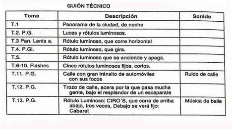

El Guion Tecnico dentro del plan de rodaje
Diferenciando con el guion literario que era narrativo, tenemos que tomar el guion técnico como una herramienta de producción. El primero en ver y aprobar el guion técnico es el productor luego pasa al director/realizador
nos vamos a mover entre planos que van a seguir un orden, para llevar acabo el rodaje, esta es la base de la planificación, el proceso es que el director revisa el guion literario y en base a:
- Nociones nociones básicas de qué estilo narrativo/tono.
- Producción: desglozar, va a dividir en partes el gion literario y tratar de sacar presupuesto.
- Ayudante de dirección: va a establecer el plan de rodaje.
- Técnicos: fotografía, iluminación, atrezo, vestuaristas: se implican en el guion técnico la puesta en escena para una planificación.
En definitiva el guion técnico es útil para determinar el orden más eficiente de grabación. Cada plano tiene que estar concevido en el plano que sucede y precede, para planificar el rodaje, dos figuras más que entra dentro del guion técnico
- Director de fotografía: los encuadres, lo ángulos
- Director artistico: estética y colores
Formato: debre ser un dinA4, puede ser horizontal o vertical pero generalmente se utiliza más en horizontal, teniendo en cuenta de que el guion narrativo es un DinA4 y una pagina equivale a 1 minuto en patalla la separación se debe hacer con octagos de guion: se debe dividir el guion en 8 partes iguales y cada uno es un octágono de guion.
- Número y nombre de escena: aquí se debe colocar cuántos octavos de guion ocupa. Intentar que una escena no sea tan larga.
- La configuración de planos organizados: a la hora de grabar una escena hay que agrupar los planos del mismo tipo.
- Número de plano:
- Descripción del plano:
- Ver los apuntes del lenguaje audiovisual
- Ángulos
- Movimientos
- Óptica: todas las herramientas necesarias para grabar, incluso se van a lentes, la jaula/grip,
- micrófonos:
- Directo - sinc
- Lavalier
- silenciado - SIL
- varios: VFX efectos especiales
- segovientes

Elementos importantes para poner el guion narrativo
Anotaciones
- Escenas - color
- music on/off
- personaje van en un color especifico
- cuando hay elementos importante se redondean: vestuario, atrezo y fx
- vestuario